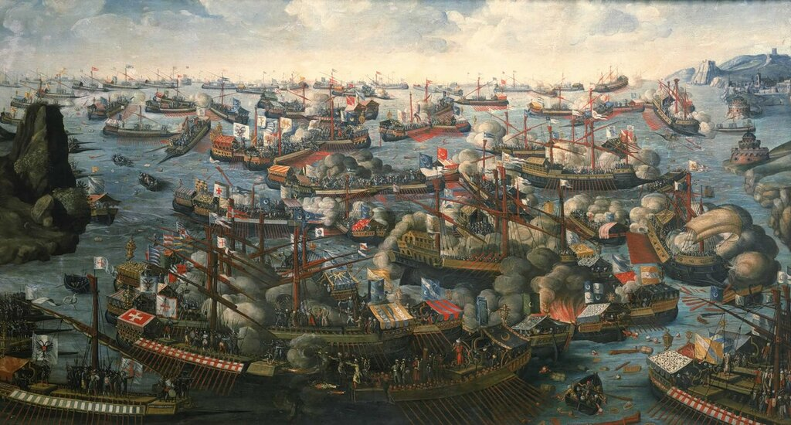
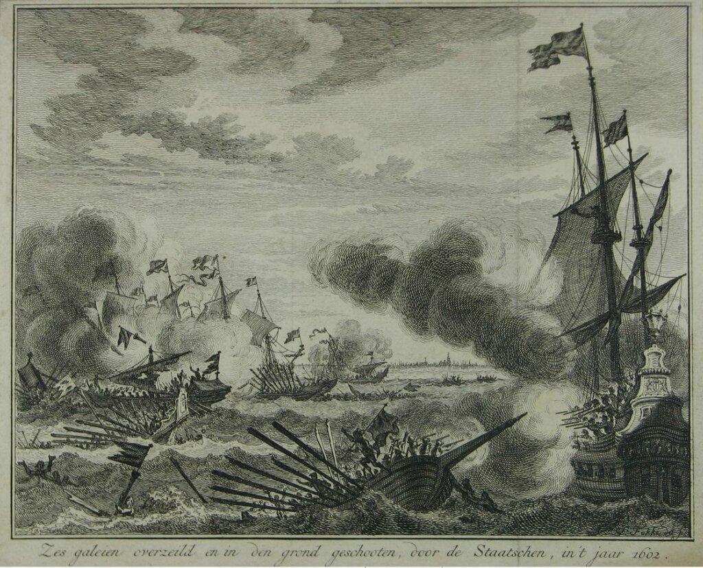
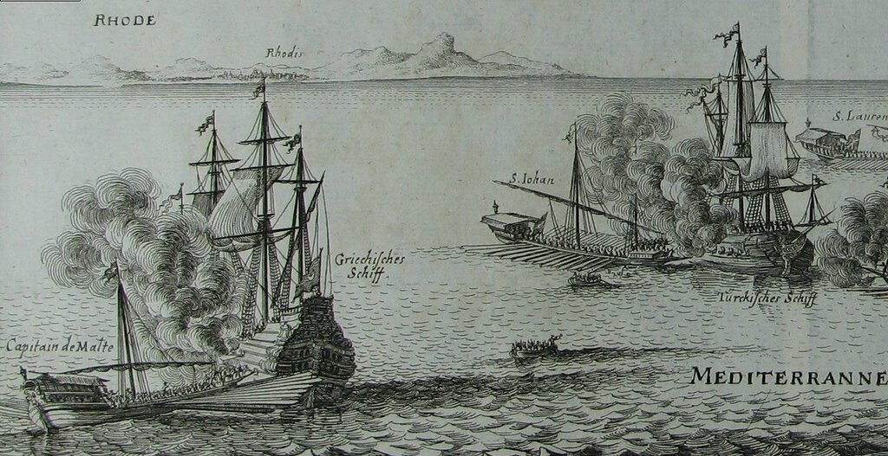

Битва при Лепанто 1571 г. Анонимный художник
Памятник Сервантесу в Лепанто ( Фото внучки Марины).
«И, между прочим, ученые люди утверждают, что без них не могли бы существовать военные, ибо и у войны есть свои законы, коим она подчиняется, и составление таковых - это уж дело наук и людей ученых. Военные на это возражают, что без них не было бы и законов, ибо это они защищают государства, оберегают королевства, обороняют города, охраняют дороги, очищают моря от корсаров, - словом, если б их не было, в государствах, королевствах, монархиях, городах, на наземных и морских путях - всюду наблюдались бы ужасы и беспорядки, которые имеют место во время войны, когда ей дано особое право и власть. А ведь что дорого обходится, то ценится и долженствует цениться дороже, - это всем известно. Чтобы стать изрядным законником, потребно время, потребна усидчивость, нужно отказывать себе в одежде и пище, не считаясь с головокружениями, с несварением желудка, и еще кое-что в том же роде потребно для этого, отчасти мною уже указанное. Но чтобы стать, в свой черед, хорошим солдатом, для этого потребно все, что потребно и студенту, но только возведенное в такую степень, что сравнение тут уже невозможно, ибо солдат каждую секунду рискует жизнью. В самом деле, что такое страх перед бедностью и нищетою, охватывающий и преследующий студента, по сравнению с тем страхом, который овладевает солдатом, когда он в осажденной крепости стоит на часах, охраняя равелин или же кавальер, и чувствует, что неприятель ведет подкоп, а ему никак нельзя уйти с поста и избежать столь грозной опасности? Единственно, что он может сделать, это дать знать своему начальнику, и начальник постарается отвести угрозу контрминою, а его дело стоять смирно, с трепетом ожидая, что вот-вот он без помощи крыльев взлетит под облака или же, отнюдь не по своей доброй воле, низвергнется в пропасть. А если и это, по-вашему, опасность небольшая, то не менее страшно, а, пожалуй, даже и пострашнее, когда в открытом море две галеры идут на абордажный приступ, сойдутся, сцепятся вплотную, а солдату приходится стоять на таране в два фута шириной. Да притом еще он видит пред собой столько же грозящих ему прислужников смерти, сколько с неприятельской стороны наведено на него огнестрельных орудий, находящихся на расстоянии копья, сознает, что один неосторожный шаг - и он отправится обозревать Нептуновы подводные владения, и все же из чувства чести бесстрашно подставляет грудь под пули и тщится по узенькой дощечке пробраться на вражеское судно. Но еще удивительнее вот что: стоит одному упасть туда, откуда он уже не выберется до скончания века, и на его место становится другой, а если и этот канет в морскую пучину, подстерегающую его, словно врага, на смену ему ринутся еще и еще, и не заметишь, как они, столь же незаметно, сгинут, - да, подобной смелости и дерзновения ни в каком другом бою не увидишь.»

Бой в Ла-Манше между голландскими кораблями и восемью испанскими галерами 3 октября 1602 года. Гравюра Isaac Tirion

Бой галер Мальтийского ордена с турецкими галеонами 28 сентября 1644 года (фрагмент) M. Merian, 1707
«Благословенны счастливые времена, не знавшие чудовищной ярости этих сатанинских огнестрельных орудий, коих изобретатель, я убежден, получил награду в преисподней за свое дьявольское изобретение, с помощью которого чья-нибудь трусливая и подлая рука может отнять ныне жизнь у доблестного кавальеро, - он полон решимости и отваги, этот кавальеро, той отваги, что воспламеняет и воодушевляет храбрые сердца, и вдруг откуда ни возьмись шальная пуля (выпущенная человеком, который, может статься, сам испугался вспышки, произведенной выстрелом из этого проклятого орудия, и удрал) в одно мгновение обрывает и губит нить мыслей и самую жизнь того, кто достоин был наслаждаться ею долгие годы. И вот я вынужден сознаться, что, приняв все это в рассуждение, в глубине души я раскаиваюсь, что избрал поприще странствующего рыцарства в наше подлое время, ибо хотя мне не страшна никакая опасность, а все же меня берет сомнение, когда подумаю, что свинец и порох могут лишить меня возможности стяжать доблестною моею дланью и острием моего меча почет и славу во всех известных нам странах. Но на все воля неба, и если только мне удастся совершить все, что я задумал, то мне воздадут наибольшие почести, ибо я встречаюсь лицом к лицу с такими опасностями, с какими странствующим рыцарям протекших столетий встречаться не доводилось.»